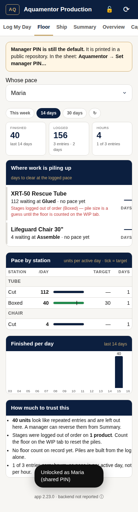
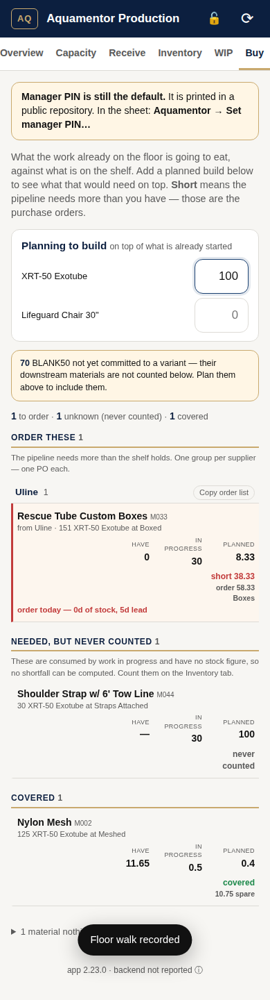
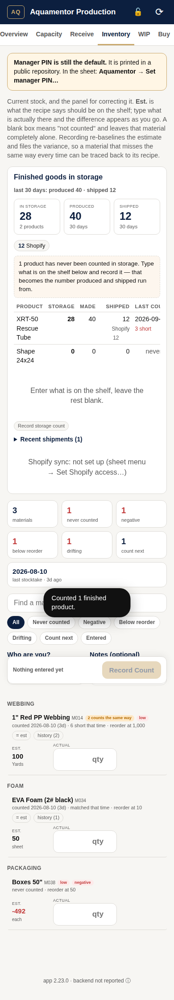

Everything the crew does, plus the seven manager tabs behind the lock: where work is piling up, what to buy, what's in storage and where it went, and how to fix bad entries. Five minutes a day, twenty on Monday.
Open the appTap the 🔒 at the top right.
Type your name exactly as it appears in the crew list, then your PIN. Dan set it. The lock turns to 🔓 and seven more tabs appear.
Tap 🔓 to lock again when you're done on a shared phone.
Your own phone can stay unlocked. If the app ever drops you back to the crew view on its own, a PIN was changed: unlock again.
| Tab | Question it answers | What you do there |
|---|---|---|
| Floor | Where is work piling up, how fast is each station going? | Read. Piles worst-first with days to clear; pace per station against target; finished per day. |
| Summary | How did the last 7 days go, and how much of it can I trust? | Read. Reverse repeated entries under Fix-ups. Export CSVs. |
| Overview | What's done, what's waiting, what should each station do tomorrow? | Tap a target number to change it. |
| Capacity | What's the bottleneck, when could an order ship, who's fastest at what? | Use the promise calculator: product + quantity → working days and a date. |
| Receive | A delivery arrived. Put it on the shelf. | Material, quantity, PO number. Recent deliveries listed below. |
| Inventory | What's on the shelf, what's in storage, what's drifting? | Count materials and finished goods. Type the real number, leave the rest blank, record. |
| WIP | What's physically at each station right now? | Walk the floor and count. Resets the piles. |
| Buy | What runs out, when, and how much to order? | Order lists per supplier. "Order by" dates once lead times are filled in. |


Log My Day → set the date → tap the chip under Today's totals → how many to take back and why. Materials go back too.
Summary → Fix-ups. One Reverse button per repeat. Reverses the extra copies only.
WIP → Walk the whole floor. Counts win over the log from that moment on.
Inventory → type the real count → Record. The estimate restarts from your number and the variance is filed.

When a tube is logged as Boxed (or a chair or mat as Box) it lands in storage automatically. It leaves storage three ways:
Produced minus shipped should equal what's in storage. When you count storage, the difference is the variance, and it's the number that tells you whether shipments are being recorded.
Pick who you are at the top of the form.
Counts are signed. Yours goes on the record.
Type only the numbers you actually counted.
A blank box means "didn't count", and that material is left alone. Zero means "I looked and there's none", and that counts.
Watch the difference appear as you type.
"That can't be right" costs nothing at the shelf and a walk back from the desk.
Record.
The estimate restarts from your number. Materials that miss the same way every time are the ones whose recipe is wrong; tell Dan.